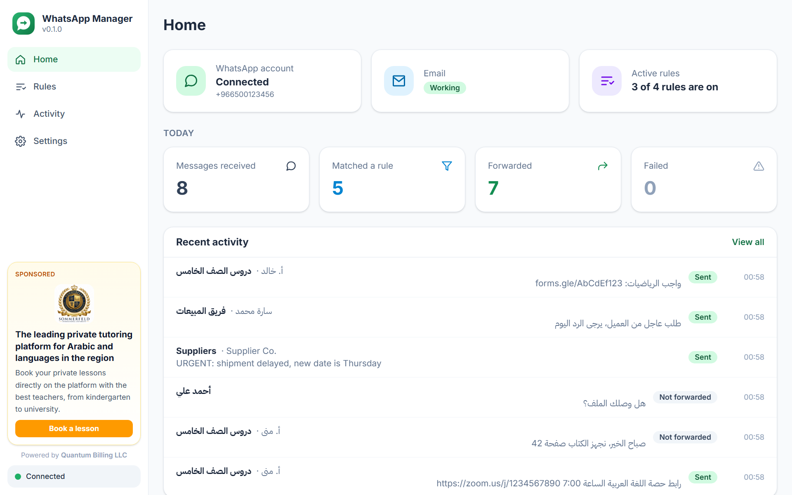

رسائل واتساب المهمة تصل إلى الشخص الصحيح، تلقائياً. The WhatsApp messages that matter, delivered to the right person automatically.
تطبيق مجاني لويندوز يراقب مجموعاتك ومحادثاتك، ويحوّل الرسائل التي تطابق قواعدك — رابط درس، طلب عاجل، رسالة من شخص معيّن — إلى بريد إلكتروني أو رقم أو مجموعة واتساب. A free Windows app that watches your groups and chats and forwards the messages that match your rules — a lesson link, an urgent request, anything from one person — to an email address, a WhatsApp number or a group.
روابط الدروس لولي الأمرLesson links to parent
- من مجموعة الصف الخامسFrom the Grade 5 group
- إذا فيها رابطIf it contains a link
- أرسلها بالبريدEmail it
العاجل إلى المدراءUrgent to managers
- من أي محادثةFrom any chat
- إذا فيها «عاجل» أو urgentIf it says “urgent” or «عاجل»
- أرسل نسخة عبر واتسابSend a WhatsApp copy
ثلاث خطوات، بدون أي إعدادات تقنيةThree steps, nothing technical
-
ثبّت التطبيقInstall
ملف تثبيت واحد بدون صلاحيات مدير. يبدأ مع ويندوز ويعمل بهدوء في شريط المهام.One installer, no administrator rights. It starts with Windows and runs quietly in the system tray.
-
اربط واتسابLink WhatsApp
من هاتفك: الإعدادات ← الأجهزة المرتبطة ← ربط جهاز، ثم امسح رمز QR. أو استخدم رمز رقم الهاتف.On your phone: Settings → Linked devices → Link a device, then scan the QR code. Or use a phone-number code.
-
أنشئ قاعدةCreate a rule
من أين ← أي رسائل ← إلى أين. ابدأ من قالب جاهز وجرّب رسالة قبل الحفظ.Where from → which messages → send to. Start from a template and try a sample message before saving.
كل قاعدة جملة واحدة تقرؤها بسهولةEvery rule reads as one sentence
| عندما تصل رسالة…When a message… | و……and | إذنThen |
|---|---|---|
| في مجموعة «فريق المبيعات»arrives in the “Sales Team” group | فيها رابطcontains a link | أرسلها بالبريد إلىemail it to sales@company.com |
| في مجموعة الدروسarrives in a lessons group | فيها رابط زووم أو ميت أو أي رابطhas a Zoom, Meet or any link | بريد لولي الأمر ونسخة عبر واتسابemail the parent and send a WhatsApp copy |
| في أي محادثةarrives in any chat | فيها «عاجل» أو urgentsays “urgent” or «عاجل» | أرسلها إلى مجموعة «المدراء»send it to the “Managers” group |
| من أحمدcomes from Ahmed | — | حوّلها عبر واتساب إلى سارةforward it on WhatsApp to Sara |
واجهة عربية واضحة، والإنجليزية بنقرةA clear interface in Arabic or English

مصمم ليعمل بدون متابعةBuilt to run unattended
لا تكرار ولا حلقاتNo duplicates, no loops
لا تصل الرسالة نفسها مرتين لنفس الوجهة حتى لو طابقتها عدة قواعد، ولا يعيد التطبيق تحويل ما أرسله بنفسه.A message never reaches the same destination twice, even when several rules match, and the app never re-forwards its own messages.
يفهم العربيةUnderstands Arabic
«عاجل» تطابق «عَاجِل» و«عـــاجل»، و«احمد» تطابق «أحمد». الهمزات والتشكيل والتطويل تُعالج تلقائياً.Keywords ignore diacritics, tatweel and letter variants such as أ/ا and ة/ه, so Arabic messages match the way people write them.
أي رابطAny link
زووم وميت وتيمز ونماذج جوجل وأي موقع، حتى لو كان الرابط ملتصقاً بالنص بدون مسافة.Zoom, Meet, Teams, Google Forms or any site, even when the link is glued to the text with no space.
بريدك الخاصYour own email
Gmail وOutlook وMicrosoft 365 وأي خادم SMTP، مع إعداد سريع ورسالة تجريبية، ورقم متسلسل في العنوان حتى لا يجمعها Gmail.Gmail, Outlook, Microsoft 365 or any SMTP server, with quick setup, a test email, and numbered subjects so Gmail never merges them.
يتعافى وحدهRecovers by itself
يعيد الاتصال بعد انقطاع الإنترنت أو السكون، وتنتظر الرسائل حتى يعود واتساب أو البريد ثم تُرسل.Reconnects after network loss or sleep; messages wait while WhatsApp or email is down and go out when it is back.
خصوصية كاملةPrivate by design
كل شيء على جهازك: لا حسابات ولا سحابة ولا تتبع، وكلمات المرور مشفرة بحماية ويندوز. تُحذف الرسائل القديمة بعد 5 أيام.Everything stays on your PC: no accounts, cloud or tracking, passwords encrypted by Windows. Old messages are deleted after 5 days.
جاهز في دقيقتينReady in two minutes
- نزّل Download WhatsAppManager-Setup.exe من صفحة الإصدارات. from the releases page.
- شغّله. إذا ظهرت رسالة «حمى Windows جهازك» اضغط «مزيد من المعلومات» ثم «تشغيل على أي حال».Run it. If Windows says “Windows protected your PC”, click “More info”, then “Run anyway”.
- اتبع المعالج: اللغة، ربط واتساب، البريد (اختياري)، ثم أول قاعدة.Follow the wizard: language, link WhatsApp, email (optional), then your first rule.
يتطلب ويندوز 10 (1809 أو أحدث) أو ويندوز 11، 64-بت.Requires Windows 10 (1809 or later) or Windows 11, 64-bit.
نصيحة: استخدم رقم واتساب مخصصاً للأتمتة؛ قد يقيّد واتساب الأرقام التي ترسل رسائل آلية كثيرة.Tip: use a dedicated WhatsApp number for automation; WhatsApp may restrict numbers that send many automated messages.
قبل أن تبدأBefore you start
هل يجب إبقاء النافذة مفتوحة؟Do I need to keep the window open?
لا. يعمل التطبيق في شريط المهام بجانب الساعة ويبدأ مع ويندوز. للإيقاف اختر «خروج» من قائمة الأيقونة.No. It keeps working in the system tray next to the clock and starts with Windows. Use Quit in the tray menu to stop it.
رسالة لم تُحوّل، كيف أعرف السبب؟A message was not forwarded. Why?
افتح «السجل»: بجانب كل رسالة سبب تحويلها أو عدم تحويلها، مثل «ليست من محادثة مراقبة» أو «وصلت قبل إنشاء القاعدة».Open Activity: every message shows why it was or was not forwarded, such as “Not from a watched chat” or “Arrived before the rule existed”.
البريد يرفض كلمة المرورMy email password is rejected
Gmail وOutlook وYahoo وiCloud تتطلب «كلمة مرور تطبيق» وليس كلمة مرورك العادية. الرسائل تبقى محفوظة وتُرسل تلقائياً بعد نجاح التجربة.Gmail, Outlook, Yahoo and iCloud need an app password, not your normal one. Messages are kept and sent automatically once a test email works.
هل يتبع التطبيق لواتساب؟Is this an official WhatsApp app?
لا. هو مشروع مستقل مفتوح المصدر بترخيص MIT، ولا يتبع لواتساب أو ميتا.No. It is an independent open-source project under the MIT licence, not affiliated with WhatsApp or Meta.